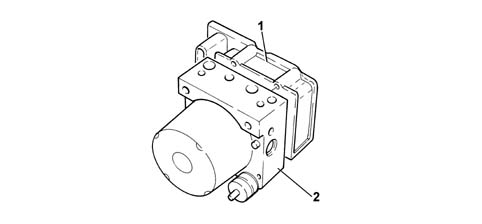
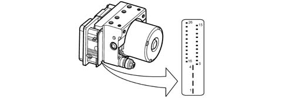
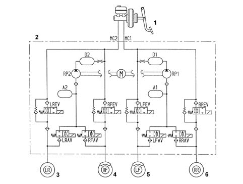
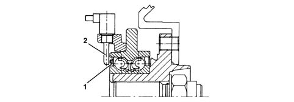
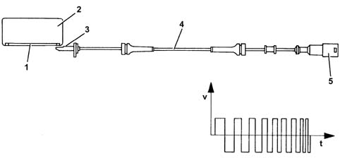

3340A abs check/adjustment devices
- Path
- Descriptions > 33 BRAKING SYSTEM > 3340 A(B.S. ANTI-LOCK BRAKING SYSTEM .) > 3340A abs check/adjustment devices
- Kind
- system description
- Applies to
- all engines; all production periods
- Interactive page
- https://sloeber94.github.io/elrnDB-fPnd/en/#/2750936
Applies to: all engines; all production periods
Structure
This consists of an electronic cotnrol unit (1) and an electro-hydraulic control unit (2).

Applies to: all engines; all production periods
Operation
The electronic control unit performs the following functions:
- downloading data from the wheel rpm sensors
- memorizing the control parameters defined during the preparation of the vehicle
- memorizing the control software
- processing the data acquired
- controlling the braking process
- detecting ABS component faults
- memorizing fault codes and activating the A.B.S. and EBD warning lights.
- sending and receiving data via the C-CAN line (where present)
- transmitting and receiving data via the diagnostic connector;
ABS/EBD PIN OUT

1 Power earth 2 Supply + 30 3 Supply + 30 4 Signal earth (on chassis) 5. Left front sensor signal 6. Rear sensor positive left 7. N.C. 8. Rear sensor positive right 9. Front sensor positive left 10. Right front sensor signal 11. ABS tester k line 12. N.C. 13. Serial connection to NPL 14. N.C. 15. N.C. 16. Left front sensor positive 17. Left rear sensor signal 18. Power supply (+15) 19. Right rear sensor signal 20. Brake switch signal 21. N.C. 22. N.C. 23. Serial connection to NPL 24. N.C. 25 N.C. 26. N.C.
Applies to: all engines; all production periods
Operation
Responsible for modulating the pressure of the fluid at the brake calipers via two solenoid valves with the following stages:
- brake fluid pressure increase
- brake fluid pressure maintenance
- brake fluid pressure discharge.
Applies to: all engines; all production periods
Structure
The electro-hydraulic control unit consists of:
- eight two-way solenoid valves
- a dual circuit electric recovery pump
- two low pressure accumulators
- two high pressure accumulators

1 - Brake servo pump unit 2 - Hydraulic control unit 3 - Rear wheel wheel 4 - Front wheel door 5 - Front wheel wheel 6 - Rear wheel door
Applies to: all engines; all production periods
System specifications
The adoption of active sensors offers the following advantages:
- Less sensitivity to the distance between the sensor and the magnetic ring (gap)
- it reduces sensitivity to electro-magnetic interference
- the active sensor is able to measure wheel rpm speeds down to zero (instead of 2.5 km/h with the passive sensor)
- it produces savings in weight and size
- it simplifies the transmission couplings through the elimination of the flywheels.
Applies to: all engines; all production periods
Structure
The active sensors consist of two basic parts:
- a magnetic multi-polar codifier (1) integrated in the instrumented wheel hub bearing
- a 'magnetic-resistive' receiver (2) opposite the codifier.
FRONT SENSOR

Applies to: all engines; all production periods
Introduction
The operation of the sensor is based on the variation in the internal electrical resistance depending on the intensity and the direction of the lines of force of an external magnetic field (multipolar magnetic codifier) producing a variable square wave signal whose frequency depends on the rotation speed of the wheel, but whose range is constant.
The active sensor is thus a proximity sensor with its own electronic system. It is connected to the ABS control unit by means of an electrical supply cable and sends vehicle speed information to the control unit.
The phonic ring is a multipolar ring, an elastomer with a certain quantity of magnetic particles which are aligned by means of a special magnetization technique to produce different magnets with alternating north and south polarity around the circumference of the ring.

1 - Magnetised sealing ring 2 - Bearing 3 - Sensor head 4 - Active sensor 5 - Sealed connector